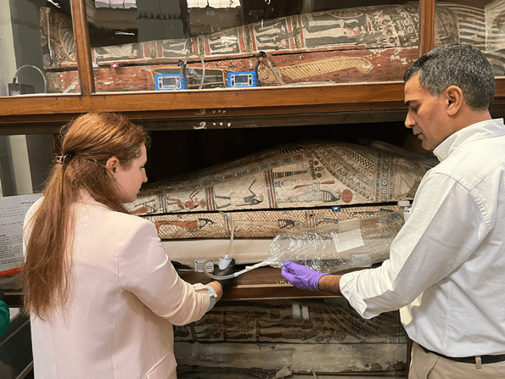

This articleoriginally appeared in Knowable Magazine.
We often learn about the past visually—through oil paintings and sepia photographs, books and buildings, artifacts displayed behind glass. And sometimes we get to touch historical objects or listen to recordings. But rarely do we use our sense of smell—our oldest, most primal way of learning about the environment—to experience the distant past.
Without access to odor, “you lose that intimacy that smell brings to the interaction between us and objects,” saysanalytical chemistMatija Strlič. As lead scientist of the Heritage Science Laboratory at the University of Ljubljana in Slovenia and previously deputy director of the Institute for Sustainable Heritage at University College London, Strlič has devoted his career to interdisciplinary research in the field of heritage science. Much of his work focused on the preservation and reconstruction of culturally significant scents.
Reconstructed scents can enhance museum and gallery exhibits, says IngerLeemans, a cultural historian at the Royal Netherlands Academy of Arts and Sciences. Smell can provide a more inviting entry point, especially for uninitiated visitors, because there’s far less formalized language for describing smell than for interpreting visual art or displays. Since there’s no “right way” of talking about scent, she says, “your own knowledge is as good as the others’.”
Despite their potential to enrich our understanding of history and art, smells are rarely conserved with the same care as buildings or archaeological artifacts. But a small group of researchers, including Strlič and Leemans, is trying to change that—combining chemistry, ethnography, history and other disciplines to document and preserve olfactory heritage.
A chemist could theoretically whip up the smell of old books centuries from now.
Some projects aim to safeguard a beloved smell before it disappears. When the library in London’s St. Paul’s Cathedral was scheduled for renovation, for example, Strlič and his UCL colleague Cecilia Bembibre set about documenting the historic library’s distinct smell.
The team first analyzed the chemicals wafting from the collection, which includes books dating back to the 12th century, and the surrounding furnishings, which have barely changed since the library was completed in 1709. They used a process called gas chromatography-mass spectrometry, which helps separate, identify and quantify volatile organic compounds, to examine air samples they’d captured in the library.
“As an analytical chemist, I was able to characterize and quantify those molecules, but how people describe what they felt required a completely different approach,” says Strlič. To whittle down the list of compounds identified by the mass spectrometer to the ones that humans can actually smell, the researchers next invited seven untrained “sniffers” into the cathedral library and asked them to describe its smell using a list of 21 adjectives commonly used to describe the compounds.

ROBOSNIFFERS: These delicate instruments sample the air wafting through the library of St. Paul’s Cathedral in London, picking up volatile compounds that evoke the collection’s distinctive scent of old books and furniture. Credit: Cecilia Bembibre.
The list included words like green and fatty, which people frequently use to describe the smell of the chemical hexanal, and almond, which is associated with benzaldehyde. Both compounds are released by paper as it degrades. The sniffers were also invited to add any descriptors of their own.
One word that all sniffers used to describe the library wasn’t particularly surprising: woody. Others that proved popular were smoky, earthy, and vanilla. Such descriptors can help conservators assess the state of old paper, since papers that are slightly more acidic due to decay, for example, “smell more sweet,” says Strlič. “And those that are stable smell more like hay.”
Strlič and colleagues next matched the qualitative descriptors the sniffers had selected with their underlying chemical compounds to create a chemical “recipe” for the scent of the cathedral’s library. Such recipes are published in scientific journals and stored in digital research repositories, so a chemist could theoretically whip up the smell of old books centuries from now, “even if, in the future, people no longer go to a library or no longer read physical books, and only receive all information digitally,” says Strlič.
How musty are mummies?
The work at St. Paul’s Cathedral, which ended in 2016, suggested that it might be possible to capture far older scents—including smells from thousands of years ago. For a study published in 2025, Strlič was joined by scientists from Egypt, Slovenia, Poland, and the United Kingdom to study nine ancient Egyptian mummies. The aim was to learn about the mummification process and recreate a scent that will be available to visitors of the Egyptian Museum in Cairo from 2026 onward.
One might expect the scent of millennia-old mummified bodies to be off-putting, to say the least. Yet the smell is surprisingly pleasant, “because the ancient Egyptians used so many aromatic compounds, oils and resins that a lot of the original smell still remains,” Strlič says.
To capture these chemicals, Strlič and colleagues extracted air samples from the sarcophagi, separated them into single compounds with a gas chromatograph and identified them with a mass spectrometer.

A WHIFF OF MUMMY: By analyzing air next to these mummies at the Egyptian Museum in Cairo, scientists can recreate their scent—and shed light on the embalming ingredients used to preserve them. Credit: Cecilia Bembibre.
A panel of eight scientists—all trained on the scent of mummification materials—then evaluated the samples’ smells in terms of quality, intensity and pleasantness. After assessing each sample individually, the group discussed their findings to reach consensus: Woody, spicy, and sweet emerged as common descriptors across all nine bodies.
The scent profiles that the team created based on these chemical and sensory observations can now be used to understand which mummies are more degraded than others, and how some of the bodies were mummified in the first place, says Strlič. For example, the team identified embalming ingredients like conifer oils, frankincense, myrrh, and cinnamon, as well as more modern compounds, such as synthetic pesticides and plant-based pest oils, which museums have used to preserve the mummies, often without documentation.
Strlič hopes that such research will help to expand the use of smell analysis as a noninvasive research technique, since it doesn’t require removing any physical samples from the studied object. The team also intends to apply its findings to create what amounts to a mummy “perfume” for the Egyptian Museum. For this, they will select up to 15 key chemical compounds from the mix and adjust their ratios to reflect the natural scent, with panels of sniffers comparing the new creation with the original until there’s no perceptible difference between them. “This is a repetitive process that involves a lot of trial and error,” says Strlič.
Creating even the smell of Hell
While old artifacts offer a convenient starting point for olfactory analysis, many historic smells have not been preserved in physical form. To re-create them, researchers must rely on archival documents and a certain amount of creative interpretation. That’s what a European olfactory heritage project called Odeuropa did for a number of historical events, sites and even ideas, including the Battle of Waterloo and 17th century Amsterdam canals. The team even re-created the scent of Christian “Hell” as described in 16th century sermons, including notes of sulfur and brimstone and a whiff of “a million dead dogs.”
“Olfaction helps shape our cultures, although it often does so unknowingly or without us noticing,”says Leemans, who led the Odeuropa project. “When we talk about cultural heritage, we can think about religious rituals, but we can also think about specific scents that we’ve been cherishing and living with for a long time.”
The team also intends to apply its findings to create what amounts to a mummy “perfume” for the Egyptian Museum.
To reconstruct these complex historic “smellscapes,” Leemans and her colleagues scoured old document archives and images for any related smell references. “We search for nose witnesses, people describing those smells,” she says. “But we also look at the components of that smellscape,” such as architectural descriptions listing building materials.
To accelerate the work, Odeuropa has created an AI-driven database of more than 2.5 million historical smell references, mined from 43,000 images and 167,000 historical texts published in seven European languages.
When it’s time to create a real perfume based on this data, Odeuropa researchers write a detailed brief outlining the smell’s relevant components as well as the story behind it. Working with a perfume and fragrance company, they begin evaluating iterations of the scent in different ways—by asking panels of sniffers to assess the scent blind or after a short presentation on the subject, or by approaching curatorial, academic and fragrance experts to peer-review the fragrance.
To each their own odors
A person’s perception of smell is inherently subjective and dependent on their unique biology, personal experience and culture, says neuroscientist Gülce Nazlı Dikeçligil at the University of Pennsylvania, and lead author of a 2024 Annual Review of Psychology on human olfaction. “The olfactory system isn’t necessarily optimized for certainty and consistency,” she says. Instead of simply identifying molecules from the environment with computer-like precision, our brains are asking, “What does this molecule mean to me now, in the context of my history?”
As our oldest sense, evolutionarily speaking, olfaction enjoys priority access to brain regions like the amygdala and hippocampus, which are key in processing emotion and memory, notes Dikeçligil. This means that the memories triggered by scents tend to be especially vivid and emotionally significant.
Scent “sparks thoughts, memories, ideas and gets people talking about and in front of paintings, which is what I want,” says art historian Christina Bradstreet from the Association for Art History in the U.K. She recently worked with the renowned Spanish perfumer Gregorio Sola to create three scents to accompany two paintings in a British exhibition on Pre-Raphaelite art. When, in 2022, the Prado Museum in Madrid created 10 scents to accompany Jan Bruegel the Elder’s painting The Sense of Smell—including jasmine, fig tree, and civet—they found that visitors lingered in front of the painting for 13 minutes, compared to the average 32 seconds.
Museums and galleries worldwide are taking note and increasingly integrating scent into their exhibitions. This attracts new visitors and engages them in a different way, “not only with the collection, but also with each other,” says Leemans. “When people start to smell, they immediately start to talk to each other, exchanging their memories, their emotions, their knowledge about the scents. It’s a really open conversation that you evoke in the museum space.” 
This articleoriginally appeared inKnowable Magazine, a nonprofit publication dedicated to making scientific knowledge accessible to all.Sign up forKnowable Magazine’s newsletter.
Lead image: Chemists, historians and other scientists are working to design perfumes that recreate and evoke scents from the past. Credit: Knowable Magazine.